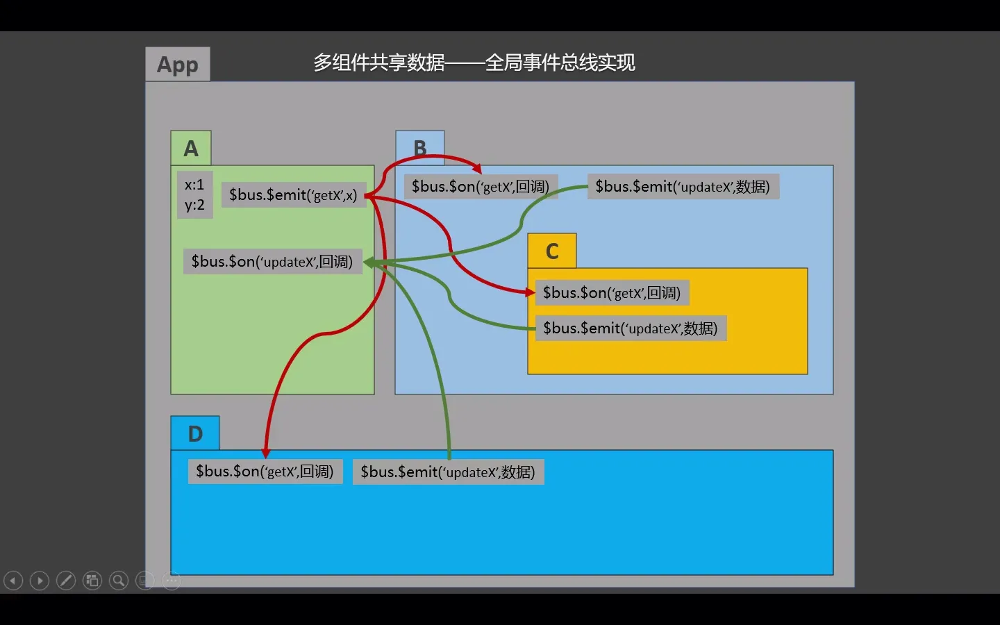
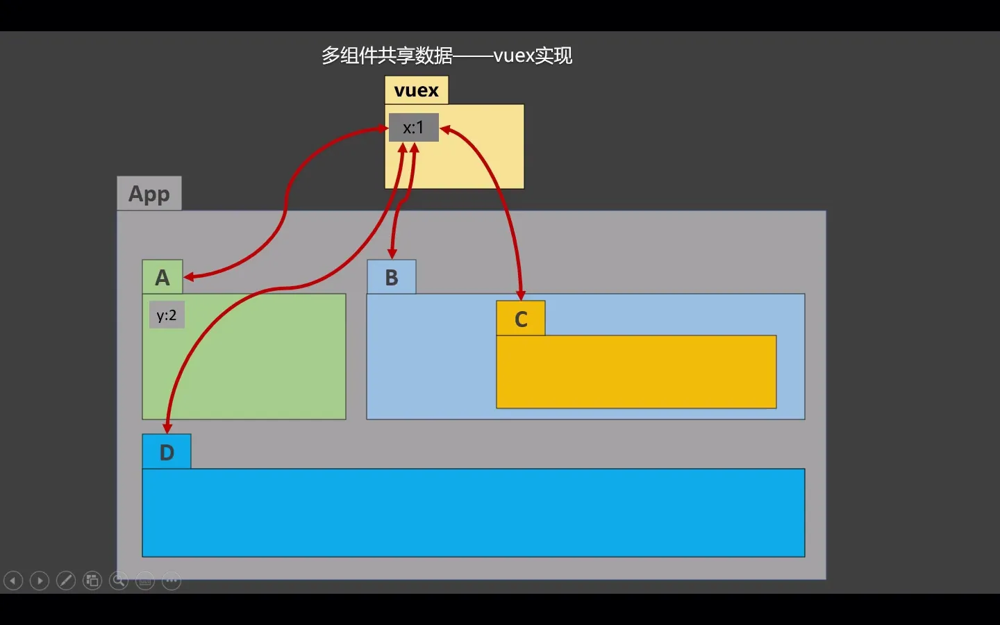
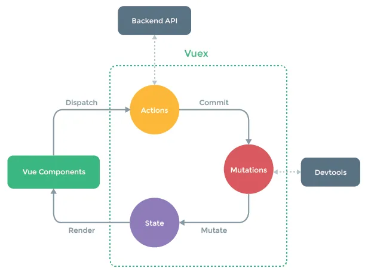
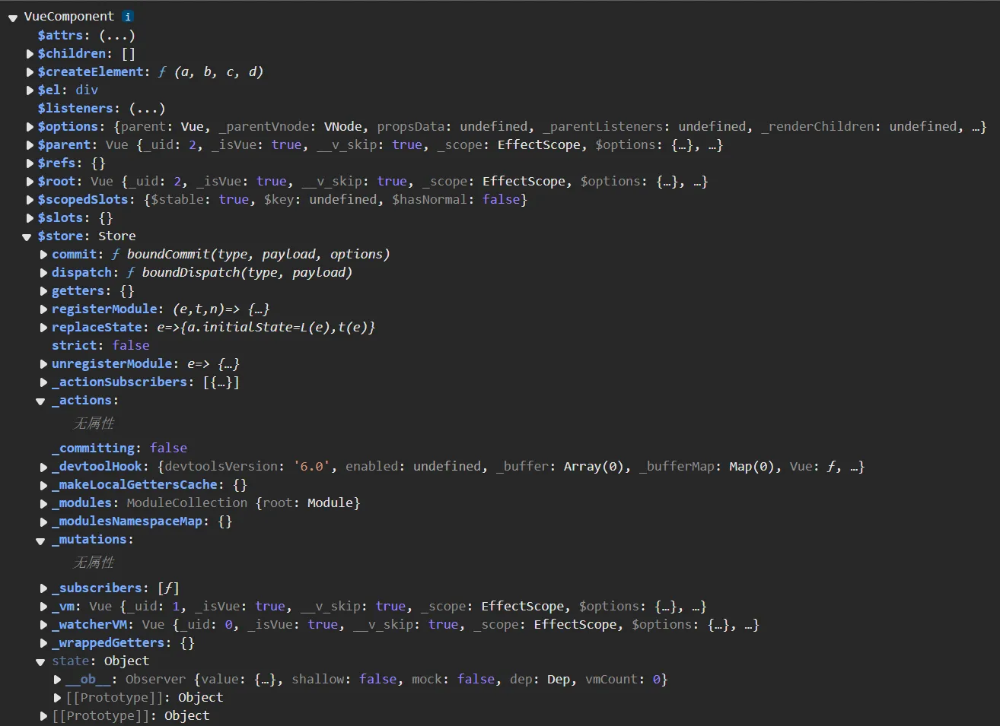
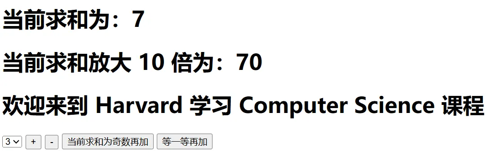
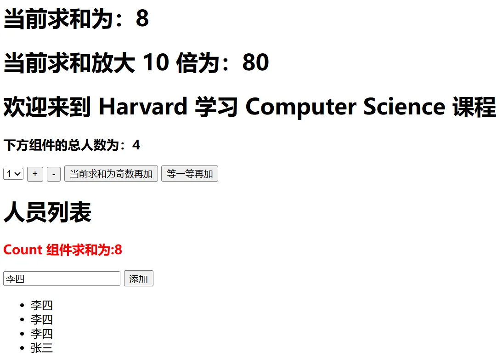

资源
正文
105 Vuex 案例简介
Note
Vuex 是什么
- 概念：专门在 Vue 中实现集中式状态（数据）管理的一个 Vue 插件，对 Vue 应用中 多个组件的共享状态进行集中式的管理（读/写），也是一种组件间通信的方式，且适用于任意组件间通信。
- Github 地址：vuejs/vuex: 🗃️ Centralized State Management for Vue.js.
什么时候使用 Vuex
- 多个组件依赖于同一状态
- 来自不同组件的行为需要变更同一状态


106 求和案例_纯 Vue 版
1 | |
1 | |
107 Vuex 工作原理图
-
Vuex 是什么？ | Vuex（Vue3）
-
Vuex 是什么？ | Vuex（Vue2）
Note
Vuex 是一个专为 Vue.js 应用程序开发的状态管理模式。它采用集中式存储管理应用的所有组件的状态，并以相应的规则保证状态以一种可预测的方式发生变化。

这张图展示了 Vuex 的工作原理。
-
Vue Components相当于顾客，当顾客需要点餐时，可以找Actions，也可直接找Mutations（也就是说Actions是可以省略的）。 -
Actions相当于服务员，对顾客点餐的内容做出判断，将信息传给Mutaions。 -
Mutations相当于后厨，加工收到的信息，更新给State。 -
State相当于菜品，由Mutations处理得到，最后交给Vue Components。 -
Actions、Mutations和State为 Vuex 的组成部分，放在一个store中。
Note
什么情况下我应该使用 Vuex？
Vuex 可以帮助我们管理共享状态，并附带了更多的概念和框架。这需要对短期和长期效益进行权衡。
如果您不打算开发大型单页应用，使用 Vuex 可能是繁琐冗余的。确实是如此——如果您的应用够简单，您最好不要使用 Vuex。一个简单的 store 模式 (opens new window) 就足够您所需了。但是，如果您需要构建一个中大型单页应用，您很可能会考虑如何更好地在组件外部管理状态，Vuex 将会成为自然而然的选择。引用 Redux 的作者 Dan Abramov 的话说就是：
Flux 架构就像眼镜：您自会知道什么时候需要它。
108 搭建 Vuex 环境
Warning
- Vue2 中，要用 Vuex 的 3 版本
- Vue3 中，要用 Vuex 的 4 版本
1 | |
1 | |

当 vm 和 vc 对象都具有属性 $store 时，视为 Vuex 安装成功。
如此构建项目：
main.js在使用new Vue()创建 vm 时，附带参数store。- 一般 Vuex 的
store配置在src/store/index.js中。
109 求和案例_Vuex 版
还是根据这个图来：
$store.state存储着数据。Vue Components可以通过this.$store.dispatch向Acitons发送请求，也可以直接使用this.$store.commit向Mutations发送请求。Actions接收请求，可以做一些预处理，通过this.$store.commit向Mutations发送请求。Mutations可以对$store.state里的值进行修改。$store.state的值修改后，更新Vue Components。
110 Vuex 开发者工具的使用
111 getters 配置项
-
概念：当
state中的数据需要经过加工后再使用时，可以使用getters再加工。 -
在
store.js中追加getters配置：1
2
3
4
5
6
7
8
9
10
11
12
13......
const getters = {
bigSum(state) {
return state.sum * 10
}
}
// 创建并暴露 store
export default new Vuex.Store({
......
getters
}) -
组件中读取数据：
$store.getters.bigSum
1 | |
1 | |
112 mapState 与 mapGetters
-
mapState 方法：用于帮我们映射
state中的数据为计算属性。1
2
3
4
5
6computed: {
// 借助 mapstate 生成计算属性：sum、school、subject（对象写法）
...mapState({sum: 'sum', school: 'school', subject: 'subject'}),
// 借助 mapstate 生成计算属性：sum、school、subject（数组写法）
...mapState(['sum', 'school', 'subject']),
} -
mapGetters 方法：用于帮助我们映射
getters中的数据为计算属性。1
2
3
4
5
6computed: {
// 借助 mapGetters 生成计算属性：bigSum（对象写法）
...mapGetters({bigSum: 'bigSum'}),
// 借助 mapGetters 生成计算属性：bigSum（数组写法）
...mapGetters(['bigSum']),
}

113 mapActions 与 mapMutations
-
mapActions方法：用于帮助我们生成与actions对话的方法，即：包含$store.dispatch(xxx)的函数1
2
3
4
5
6
7methods:{
//靠 mapActions 生成：incrementOdd、incrementWait（对象形式）
...mapActions({incrementOdd: 'jiaOdd', incrementWait: 'jiaWait'})
// 靠 mapActions 生成：incrementOdd、incrementWait（数组形式）
...mapActions(['jiaOdd', 'jiaWait'])
} -
mapMutations方法：用于帮助我们生成与mutations对话的方法，即：包含$store.commit(xxx)的函数1
2
3
4
5
6methods:{
// 靠 mapActions 生成：increment、decrement（对象形式）
...mapMutations({increment:'JIA', decrement;'JIAN'}),
// 靠 mapMutations 生成：JIA、JIAN（对象形式）
...mapMutations(['JIA','JIAN']),
}
Tip
备注：mapActions 与 mapMutatons 使用时，若需要传递参数需要：在模板中绑定事件时传递好参数，否则参数是事件对象。
1 | |
1 | |
114 多组件共享数据
1 | |
1 | |
1 | |
1 | |

115-116 Vuex 模块化 + namespace
- 目的：让代码更好维护，让多种数据分类更加明确。